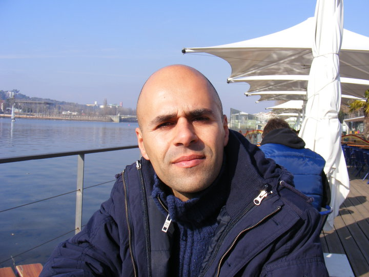

Um processo terapêutico integrativo
O Despertar para o Ser Integral é um processo terapêutico integrativo que tem como propósito promover a saúde integral — física, emocional e energética —, favorecendo a consciência interior, o autoconhecimento e a reconexão com a essência.
Através de práticas como a Medicina Tradicional Chinesa, a Hipnoterapia, a Comunicação Não-Violenta e a Meditação, este caminho convida-a/o a olhar para sintomas e desafios de saúde como oportunidades de autoconhecimento, explorando padrões, libertando bloqueios e desenvolvendo uma relação mais consciente consigo mesma/o.
Este processo tem um propósito de crescimento pessoal e bem-estar integral, não substituindo acompanhamento psicológico ou médico quando necessário.
Acredito que quem é cuidado deve poder participar de forma ativa no seu processo de cura. Essa participação nasce através do autoconhecimento, da compreensão das causas profundas do desequilíbrio e da abertura à transformação.
A abordagem que apresento inspira-se na Medicina Tradicional Chinesa, onde a saúde resulta da harmonia entre corpo, mente, espírito e ambiente. O Ser humano é visto como o reflexo do universo, uma parte da imensidão cósmica, influenciado e em relação constante com tudo o que o rodeia — natureza, emoções, ciclos e relações.
Quando essa harmonia se perde, o corpo expressa sinais. Compreender esses sinais é o início da transformação.

Há momentos em que o corpo fala através de sintomas, as emoções pedem escuta, ou a vida nos convida a olhar para dentro. Seja o que for que a/o trouxe até aqui — desconforto físico, inquietação emocional ou a intuição de que é tempo de transformação — o meu papel é escutar, acolher e caminhar consigo nesse processo.
Trabalho como terapeuta integrando tradições milenares e abordagens contemporâneas: Medicina Tradicional Chinesa, Hipnoterapia, Comunicação Não Violenta, Meditação e Desenvolvimento Pessoal.
O que proponho é um processo de profunda reconexão. Um espaço onde a sua vivência é acolhida sem pressa, onde sintomas e emoções são compreendidos na sua raiz, e onde a transformação se dá com o tempo e a profundidade que cada caminho pede.
Através da Medicina Tradicional Chinesa, trabalhamos o corpo como um sistema integrado, restaurando o fluxo natural de energia e aliviando sintomas físicos na sua raiz.
Com a Hipnoterapia, a Medicina Tradicional Chinesa e técnicas de desenvolvimento pessoal, desbloqueamos padrões limitantes e facilitamos a transformação profunda.
Através da Comunicação Não Violenta e da Meditação, aprendemos a ouvir as suas necessidades mais profundas e a relacionar-se consigo e com as/os outras/os de forma autêntica.
Com práticas de meditação, cultivamos a presença consciente e a serenidade que já existe dentro de si, mas que foi esquecida no ritmo da vida moderna.
Para quem busca crescimento pessoal, ofereço um caminho estruturado de descoberta interior, integrando corpo, mente e espírito num processo transformador.
Na jornada terapêutica que proponho, utilizo diferentes recursos que se complementam e integram
Acesso aos recursos internos, ressignificação e reconexão com o inconsciente.
Equilíbrio energético e físico, restauro do fluxo vital e harmonização global.
Presença, foco, calma e enraizamento.
Clareza emocional e desenvolvimento de relações mais conscientes.
Começo sempre criando um espaço seguro e acolhedor. A sua história é ouvida sem julgamento, com empatia genuína e presença total.
Utilizando diferentes abordagens terapêuticas, ajudo-a/o a compreender a origem do que sente - física, emocional ou espiritualmente.
Juntos, criamos um plano prático e personalizado. Não dou apenas teoria, mas ferramentas concretas que pode aplicar imediatamente.
O Chi Kung (ou QiGong) é uma prática de exercício físico, mental e energético. Trata-se de uma disciplina da Medicina Tradicional Chinesa (MTC) da qual fazem também parte a acupunctura, a fitoterapia e o Tui Na (massagem terapêutica em pontos de acupunctura). Pode ser praticado como um método de exercício físico por si só ou ser inserido num programa terapêutico.
Segundo a MTC, o nosso corpo é percorrido por canais energéticos (designados de meridianos) por onde circula o chi (a energia vital). Por diversos fatores pode ocorrer um bloqueio ao livre fluir desta energia, o que originará primeiramente um desequilíbrio energético, que, se não for tratado, poderá evoluir para doença num órgão ou estrutura.
A prática de Chi Kung combina o movimento corporal, o controlo da respiração e a concentração mental. Praticar esta forma de exercício contribui para a saúde física e energética do corpo. Quando executado de forma regular, proporciona uma sensação de bem-estar e harmonia física e mental.
Fortalece a coluna vertebral e aumenta a sua flexibilidade e mobilidade (excelente aplicação em lombalgias, cervicalgias, hérnias discais, contraturas e tendinites)
Fortalece o sistema muscular, de forma natural e adaptada a cada pessoa
Trabalha tendões e articulações, tornando-os flexíveis e fortes
Promove a correção da postura corporal e o equilíbrio
Aumenta a resistência ao esforço
Disciplina a respiração tornando-a suave e profunda
Diminui o stress, ansiedade e insónia
Estimula a autoestima e a sensação de bem-estar consigo e com as/os outras/os, trazendo benefícios nas relações interpessoais
Desenvolve a concentração mental e a clareza de espírito
Produz um estado de meditação ativa e tranquilidade mental
Ativa a circulação de energia vital nos meridianos do corpo
Espaços de encontro e transformação coletiva, onde exploramos juntos ferramentas práticas para o autoconhecimento, a harmonização interior e o despertar da consciência.
Um convite à interiorização e à renovação
Tal como as árvores soltam as suas folhas para acolher um novo ciclo, somos convidados a recolher, a abrandar e a libertar o que já não nos serve. Na visão da Medicina Tradicional Chinesa, vivemos o tempo do recolhimento, do desapego e da purificação interior — um movimento natural que nos conduz à introspeção.
Este é um convite a quem sente o impulso de fazer uma viagem interior de autoconhecimento: criar espaço para escutar o silêncio, mergulhar no coração e permitir que a natureza nos inspire na transformação e no renascimento.
Neste encontro, iremos:
Metodologias: Meditação, visualização e sabedoria ancestral da medicina tradicional chinesa.
O caminho para a tranquilidade interior
O estado de hipnose é algo natural a todas as pessoas, e uma vez aprendido é facilmente aplicado no dia a dia. Através da respiração, relaxamento e visualização é possível entrar num estado de profunda tranquilidade — um estado modificado de consciência que favorece a criação de um lugar seguro de encontro consigo própria/o.
Realizar esta prática de forma frequente auxilia o encontro consigo própria/o, numa perspetiva de autoconhecimento. Favorece a possibilidade de colocar-se na posição de observadora/or serena/o e tranquila/o de si mesma/o, trazendo clareza, perceção e controlo ao seu diálogo interior.
A Auto-hipnose é utilizada em situações como:
Explorando o caminho da totalidade
Uma vivência que nos recorda que o Ser Humano é parte integrante do Universo e da natureza, influenciado por todos os movimentos e ritmos que ela apresenta. Através da sabedoria da Medicina Tradicional Chinesa, exploramos como encontrar uma postura harmoniosa dentro do caminho que escolhemos para a nossa vida.
Neste workshop iremos:
A Linguagem do Amor
É da nossa natureza gostar de dar e receber de forma compassiva. A Comunicação Não-Violenta (CNV) é uma abordagem específica que nos leva a entregarmo-nos de coração, conectando-nos às/aos outras/os e a nós mesmas/os de uma forma que permite que a compaixão natural floresça.
Embora possamos não considerar "violenta" a maneira de falarmos, frequentemente as nossas palavras induzem à mágoa e à dor, seja às/aos outras/os, seja a nós mesmas/os. A CNV ajuda-nos a reformular a maneira pela qual nos expressamos e ouvimos as/os outras/os.
O processo da CNV assenta em quatro componentes:
À medida que interiorizamos o processo da CNV, vamos substituindo os velhos padrões de defesa ou ataque diante de julgamentos e críticas. A CNV promove o respeito, a atenção e a empatia, gerando o desejo mútuo de nos entregarmos de coração.
O primeiro passo é sempre o mais importante. Vamos conversar sobre como posso ajudá-la/o na sua jornada de transformação.
Online • Coimbra • Condeixa